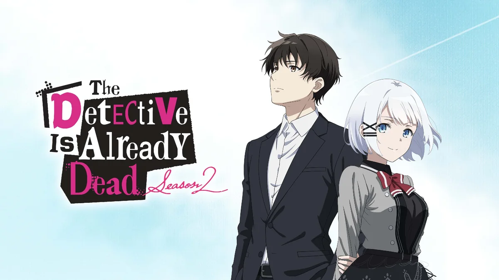
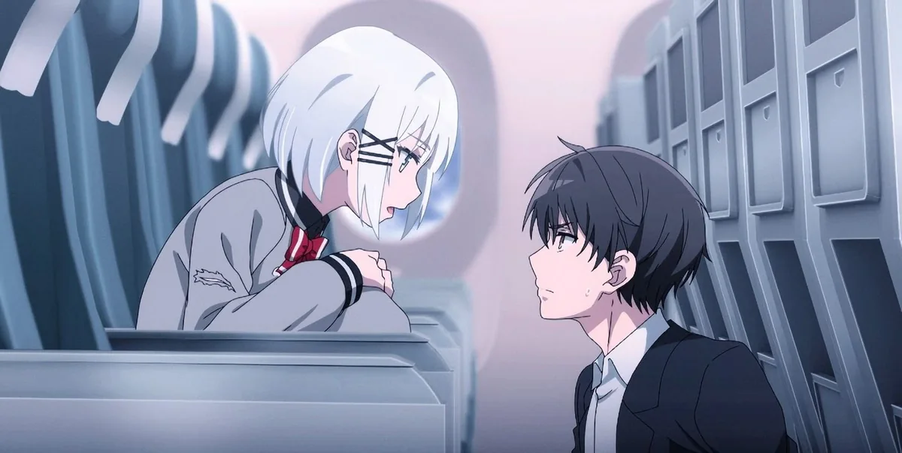
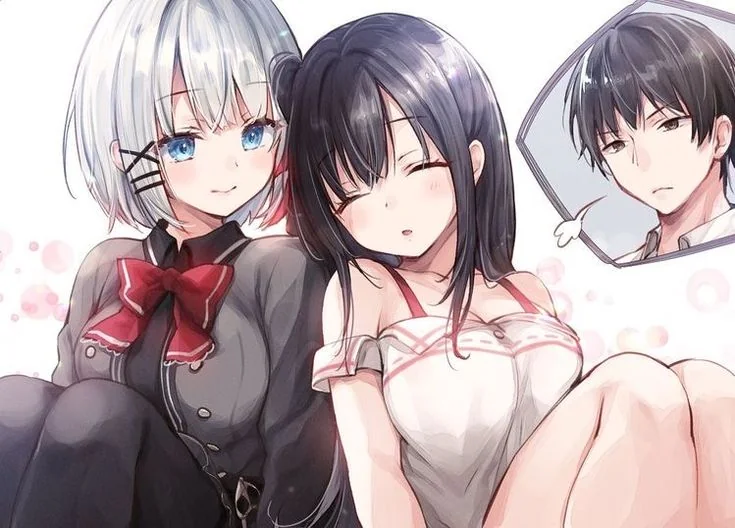
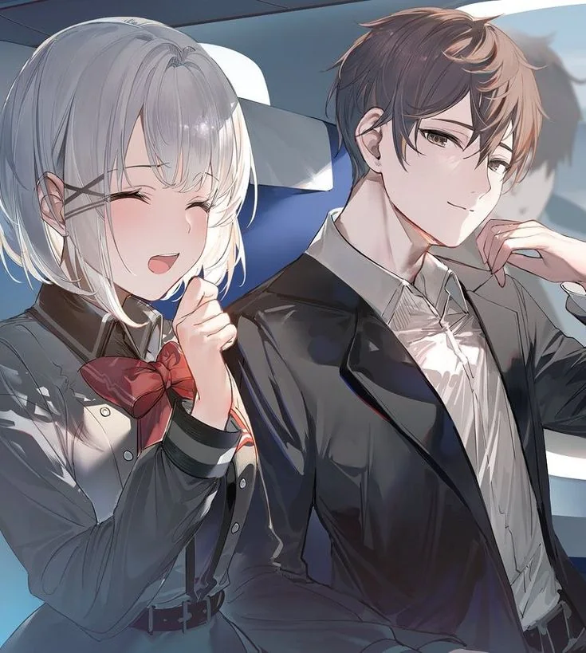
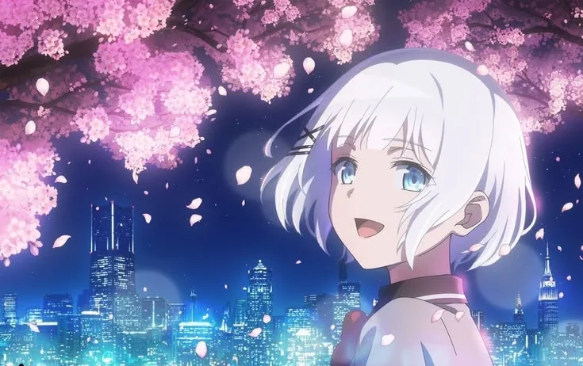

The Detective Is Already Dead Season 2: Episode Guide, Schedule and Review (2026)

Last updated: 5 November 2026
Five years after the first season ended on a note that split its audience down the middle, The Detective Is Already Dead Season 2 is airing. It started on 7 October 2026, it runs for 13 episodes, and it is the season that finally has to answer the question Season 1 only asked.
This page keeps the episode list, the weekly schedule, the cast and the story setup in one place, and updates as the season goes.
At a glance
- Episodes: 13
- Premiere: 7 October 2026
- Season: Fall 2026, airing now
- Studio: ENGI
- Director: Manabu Kurihara (returning)
- Series composition: Deko Akao (returning)
- Character design: Yōsuke Itō (returning)
- Music: 40mP and Yuuyu
- Broadcast: TOKYO MX, BS Nippon TV, AT-X (Japan)
- Streaming: Crunchyroll (worldwide, simulcast)
- Source: Nigojū's light novels, art by Umibōzu
Where Season 1 left things
If you have not watched Season 1, this is the short version. Kimihiko Kimizuka was recruited as the assistant to Siesta, a self-described great detective, during a plane hijacking. They spent three years travelling the world together before she was killed. A year later Kimihiko met Nagisa Natsunagi, a girl alive because she had received Siesta's heart, and the two of them began working together.
By the end of Season 1 the surface story was resolved and the emotional one was not. Kimihiko had accepted that he could not become Siesta, and the show had confirmed that she was staying dead. What it had not done was explain why she died.

What Season 2 is adapting
The official story setup for Season 2 picks up exactly there. Having reached the truth of the great detective's death, Kimihiko and the people around him learn something harder: that a detective described as flawless made a mistake, and what inheriting her dying wish actually means.
The tagline the season is running with translates roughly as “And so, that dying wish will never die.” That is a much more forward-looking promise than Season 1's premise, which was entirely about something that had already happened.
The official synopsis ends with a line worth quoting: the detective is already dead, the truth of her death has been revealed, but it is still too early for the epilogue. That is the season's whole thesis in one sentence.
Episode list and schedule
New episodes land weekly on Wednesdays. Episode 5 aired on 4 November 2026.
| # | Title | Date |
|---|---|---|
| 1 | To See You Once More | 7 October 2026 · premiere |
| 2 | A Story of That Day That No One Knows | 14 October 2026 |
| 3 | An Easy Way to Support Your Favorite By Being an Idol Producer | 21 October 2026 |
| 4 | Episode 4 | 28 October 2026 · title not yet listed |
| 5 | Episode 5 | 4 November 2026 · title not yet listed |
| 6 | To be announced | 11 November 2026 (scheduled) |
| 7 | To be announced | 18 November 2026 (scheduled) |
| 8 | To be announced | 25 November 2026 (scheduled) |
| 9 | To be announced | 2 December 2026 (scheduled) |
| 10 | To be announced | 9 December 2026 (scheduled) |
| 11 | To be announced | 16 December 2026 (scheduled) |
| 12 | To be announced | 23 December 2026 (scheduled) |
| 13 | To be announced | 30 December 2026 (scheduled) |
At 13 episodes running weekly from 7 October, the season is scheduled to finish at the end of December 2026. Titles for episodes four onwards had not been published at the time of writing, so this table fills them in as they appear.
Cast
The core cast returns. Arata Nagai as Kimihiko Kimizuka, Saki Miyashita as Siesta, Ayana Taketatsu as Nagisa Natsunagi, Kanon Takao as Yui Saikawa, Saho Shirasu as Charlotte Arisaka Anderson and Mai Fuchigami as Fuubi Kase.
Season 2 adds a group of characters the first season only gestured at: Hel (Yumiri Hanamori), Alicia (Maria Naganawa), Noches (Saki Miyashita), Mia Whitlock (Akari Komiyama) and Scarlett (Nobuhiko Okamoto). If the light novels are any guide, these are not side characters — the back half of the season depends on them.


Staff and music
Continuity is the headline here. Manabu Kurihara returns to direct, Deko Akao returns for series composition, and Yōsuke Itō returns for character design, all at ENGI. For a show whose first season was criticised for uneven production, keeping the same team is either reassuring or worrying depending on which side of that argument you were on.
The music is where it changes. 40mP and Yuuyu handle the score, and they also wrote, composed and arranged both theme songs. The opening is “Kono Shinzou ni Hanataba o” (この心臓に花束を, roughly “a bouquet for this heart”) by Koume. The ending is “Hakuchūmu” (白昼夢, “daydream”) by Nana Kagura, who sang the first season's ending too.
That opening title is not subtle. “A bouquet for this heart” is a direct reference to the fact that Nagisa is walking around with Siesta's heart in her chest, which tells you what the season is going to be about before a single frame plays.
What to expect
Season 1 was a story about grief with a detective show wrapped around it. Season 2 looks like it is flipping that: the conspiracy and the organisation called SPES move to the front, and the character work has to happen inside a plot that is now running.
Whether that is an improvement depends on what you wanted. Viewers who found the first season too slow and too sad should find this one more eventful. Viewers who loved it precisely because it was slow and sad may find the shift jarring.

Where to watch
Crunchyroll streams Season 2 as it airs, simulcast with Japan. In Japan it broadcasts on TOKYO MX on Wednesdays at 22:30, on BS Nippon TV at 24:30, and on AT-X at 21:30, with d Anime Store handling the earliest streaming.
Season 1 is also on Crunchyroll, so the whole thing is available in one place.
Next in this series
Catching up first? Here is the complete Season 1 guide.